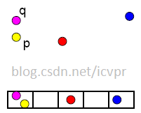

相关介绍内容主要是entropy locality-sensitive hashing （ELSH） 、cloud computing frameworks、GIST原理.
熵局部敏感分析【Entropy locality-sensitive hashing】
Basic LSH（BLSH）
网上的这几篇博文这篇LSH的讲的很通俗易懂。
http://blog.csdn.net/icvpr/article/details/12342159
http://www.cnblogs.com/maybe2030/p/4953039.html
以下是重点摘录
局部敏感哈希是近似最近邻搜索算法中最流行的一种，它有坚实的理论依据并且在高维数据空间中表现优异。LSH是一种用于_海量高维数据的 最近邻快速查找技术_，算法主要思想是**桶思维**。它的主要作用就是从海量的数据中挖掘出相似的数据，可以具体应用到文本相似度检测、网页搜索等领域。

-
基本思想
局部敏感哈希的基本思想类似于一种空间域转换思想，LSH算法基于一个假设，如果两个文本在原有的数据空间是相似的，那么分别经过哈希函数转换以后的它们也具有很高的相似度；相反，如果它们本身是不相似的，那么经过转换后它们应仍不具有相似性。
将原始数据空间中的两个相邻数据点通过相同的映射或投影变换（projection）后，这两个数据点在新的数据空间中仍然相邻的概率很大，而不相邻的数据点被映射到同一个桶的概率很小。也就是说，如果我们对原始数据进行一些hash映射后，我们希望原先相邻的两个数据能够被hash到相同的桶内，具有相同的桶号。
对原始数据集合中所有的数据都进行hash映射后，我们就得到了一个hash table，这些原始数据集被分散到了hash table的桶内，每个桶会落入一些原始数据，属于同一个桶内的数据就有很大可能是相邻的，当然也存在不相邻的数据被hash到了同一个桶内。
因此，如果我们能够找到这样一些hash functions，使得经过它们的哈希映射变换后，原始空间中相邻的数据落入相同的桶内的话，那么我们在该数据集合中进行近邻查找就变得容易了，我们只需要将查询数据进行哈希映射得到其桶号，然后取出该桶号对应桶内的所有数据，再进行线性匹配即可查找到与查询数据相邻的数据。
换句话说，我们通过hash function映射变换操作，将原始数据集合分成了多个子集合，而每个子集合中的数据间是相邻的且该子集合中的元素个数较小，因此将一个在超大集合内查找相邻元素的问题转化为了在一个很小的集合内查找相邻元素的问题，显然计算量下降了很多。
PS：需要注意的是，LSH并不能保证一定能够查找到与query data point最相邻的数据，而是减少需要匹配的数据点个数的同时保证查找到最近邻的数据点的概率很大。
-
局部敏感哈希(LSH)
局部敏感哈希的最大特点就在于保持数据的相似性，我们通过一个反例来具体介绍一下。
假设一个哈希函数为Hash(x) = x%8，那么我们现在有三个数据分别为255、257和1023，我们知道255和257本身在数值上具有很小的差距，也就是说它们在三者中比较相似。我们将上述的三个数据通过Hash函数转换：
Hash(255) = 255%8 = 7;
Hash(257) = 257%8 = 1;
Hash(1023) = 1023%8 = 7;我们通过上述的转换结果可以看出，本身很相似的255和257在转换以后变得差距很大，而在数值上差很多的255和1023却对应相同的转换结果。从这个例子我们可以看出，上述的Hash函数从数值相似度角度来看，它不是一个局部敏感哈希，因为经过它转换后的数据的相似性丧失了。
我们说局部敏感哈希要求能够保持数据的相似性，那么很多人怀疑这样的哈希函数是否真的存在。我们这样去思考这样一个极端的条件，假设一个局部敏感哈希函数具有10个不同的输出值，而现在我们具有11个完全没有相似度的数据，那么它们经过这个哈希函数必然至少存在两个不相似的数据变为了相似数据。从这个假设中，我们应该意识到局部敏感哈希是相对的，而且我们所说的保持数据的相似度不是说保持100%的相似度，而是保持最大可能的相似度。
对于局部敏感哈希“保持最大可能的相似度”的这一点，我们也可以从数据降维的角度去考虑。数据对应的维度越高，信息量也就越大，相反，如果数据进行了降维，那么毫无疑问数据所反映的信息必然会有损失。哈希函数从本质上来看就是一直在扮演数据降维的角色。
####LSH的hash function的条件
那具有怎样特点的hash functions才能够使得原本相邻的两个数据点经过hash变换后会落入相同的桶内？这些hash function需要满足以下两个条件：
1）如果d(x,y) ≤ d1， 则h(x) = h(y)的概率至少为p1；
2）如果d(x,y) ≥ d2， 则h(x) = h(y)的概率至多为p2；
其中d(x,y)表示x和y之间的距离，d1 < d2， h(x)和h(y)分别表示对x和y进行hash变换。
满足以上两个条件的hash functions称为(d1,d2,p1,p2)-sensitive。而通过一个或多个(d1,d2,p1,p2)-sensitive的hash function对原始数据集合进行hashing生成一个或多个hash table的过程称为Locality-sensitive Hashing。
####使用LSH进行对海量数据建立索引（Hash table）并通过索引来进行近似最近邻查找的过程如下：
使用LSH进行对海量数据建立索引（Hash table）并通过索引来进行近似最近邻查找的过程如下：
- 离线建立索引
（1）选取满足(d1,d2,p1,p2)-sensitive的LSH hash functions；
（2）根据对查找结果的准确率（即相邻的数据被查找到的概率）确定hash table的个数L，每个table内的hash functions的个数K，以及跟LSH hash function自身有关的参数；
（3）将所有数据经过LSH hash function哈希到相应的桶内，构成了一个或多个hash table；
- 在线查找
（1）将查询数据经过LSH hash function哈希得到相应的桶号；
（2）将桶号中对应的数据取出；（为了保证查找速度，通常只需要取出前2L个数据即可）；
（3）计算查询数据与这2L个数据之间的相似度或距离，返回最近邻的数据；
LSH在线查找时间由两个部分组成：
（1）通过LSH hash functions计算hash值（桶号）的时间；
（2）将查询数据与桶内的数据进行比较计算的时间。
因此，LSH的查找时间至少是一个sublinear时间。为什么是“至少”？因为我们可以通过对桶内的属于建立索引来加快匹配速度，这时第（2）部分的耗时就从O(N)变成了O(logN)或O(1)（取决于采用的索引方法）。
####在此paper中提及到：
常规的LSH算法是尽可能的避免相似对象的冲突，但在这个项目中，我们采用的LSH算法和常规的算法不一样，我们这反之要增大这个冲突。
paper中提到，为了提高原生LSH算法的查找能力和效率：
一种方法是多重LSH功能并综合他们的结果，但是这样的话需要大量的哈希函数、和数据库几本大小的哈希表。对应大数据的请求下，采用这种算法将要大量的空间需求。
第二是在**分布式**条件下，这也将会是一个巨大的网络压力。
Entropy LSH（ELSH）
ELSH需要的哈希函数和哈希表大小和BLSH一样，不同点在于查询搜索规划（query searched scheme）
ELSH的核心思想：对于任意的H∈H’，靠近查询点Q的数据点很有可能被作为查询点Q放入查询点Q的那个桶中，或者被作为查询点Q允许偏移量内的点放入查询点Q的那个桶中
为了达到这个目标，如何选择偏移量：
偏移量（Q + δi 1< i < L）是在以Q为球心，R为半径的球面上随机选取。
偏移量经过哈希函数得到桶OffsetBuckets。
那些落入上述OffsetBuckets中的数据点也是查询点Q的相似候选。
Panigrahy在【Panigrahy R. Entropy based nearest neighbor search in high dimensions[C]//Proceedings of the seventeenth annual ACM-SIAM symposium on Discrete algorithm. ACM, 2006:1186-1195.】中表明这种规划甚至只需要一张哈希表。
在Panigrahy的论文中，他以1-2范数为例证的结果体现了当有N个数据点时，选取适当的K和L,只需要一张哈希表就可以解决**（c，r）-NN问题**
ELSH的缺陷：
在ELSH中的查询点偏移量（query Offset）比BLSH多，当在处理单节点计算时，ELSH查询时间效率可能远不如BLSH。
云计算框架【Cloud computing Frameworks】
批处理系统和实时处理系统为两种主要云计算框架
分布式也可以说是并行计算
共同点
键值对形式，分布在各个运行节点
主流框架
批处理系统：
Map(映射)-Reduce(规约)
实时处理系统：
Apache-Spark【中文简导第一篇 第二篇】
Yahoo-S4
批处理
长期以来批处理的数据处理被大数据公司采用。
Map-Reduce处理模式下的弊端：
- 流处理和实时处理要求低延迟响应，这就意味着不能有太多数据堆积着等待被处理。
- 从多源收集而来数据可能没有全部到达聚集点。
- 在标准的Map-Reduce模式中，Reduce周期在Map周期还没有结束之前不能开始。同时所有的中间数据在被下载到reducer之前都将保存在磁盘中。增加了处理 延迟。
实时处理
分布式流处理框架是一个允许“基于key进行查找、插入、删除”的分布式键值对存储方式。
实时处理的核心想法是对于任意用户定义的行为都能基于键值对执行。
由于所有键值对节点都被存储在主内存中，因此需要充足的节点才能达到快速的处理效果。
在实用应用上，实时查询处理和输入流处理是最需要快速响应的操作。
这种处理方式催生了Twitter’s Storm, Yahoo’s S4, Cloudera’s Impala, Apache Spark, Apache Tez等一些平台参与到大数据和无SQL系统的对抗中。
GIST
GIST基础介绍
GIST是一种场景特征描述。那么什么是场景特征描述？
通常的特征描述符都是对图片的局部特征进行描述的，以这种思路进行场景描述是不可行的。
比如：对于“大街上有一些行人”这个场景，我们必须通过局部特征辨认图像是否有大街、行人等对象，再断定这是否是满足该场景。但这个计算量无疑是巨大的，且特征向量也可能大得无法在内存中存储计算。
这迫使我们需要一种更加“宏观”的特征描述方式，从而忽略图片的局部特点。比如：我们无需知道图像中在那些位置有多少人，或者有其他什么对象。
那么应该如何定义一种“宏观”的场景特征描述呢？
我们注意到：
大多数城市看起来就像天空和地面由建筑物外墙紧密连接；大部分高速公路看起来就像一个大表面拉伸天际线，里面充满了凹型（车辆）；而森林场景将包括在一个封闭的环境中，有垂直结构作为背景（树），并连接到一定纹理的水平表面（草）。
如此看来，空间网络可以一定程度表征这些信息。
五种空间包络描述
由于一开始GIST是为了描述自然和人造景观
所以我们定义下列五种对空间包络的描述方法：
- 自然度（Degree of Naturalness）：场景如果包含高度的水平和垂直线，这表明该场景有明显的人工痕迹，通常自然景象具有纹理区域和起伏的轮廓。所以，边缘具有高度垂直于水平倾向的自然度低，反之自然度高。
- 开放度（Degree of Openness）：空间包络是否是封闭（或围绕）的。封闭的，例如：森林、山、城市中心。或者是广阔的，开放的，例如：海岸、高速公路。
- 粗糙度（Degree of Roughness）：主要指主要构成成分的颗粒大小。这取决于每个空间中元素的尺寸，他们构建更加复杂的元素的可能性，以及构建的元素之间的结构关系等等。粗糙度与场景的分形维度有关，所以可以叫复杂度。
- 膨胀度（Degree of Expansion）：平行线收敛，给出了空间梯度的深度特点。例如平面视图中的建筑物，具有低膨胀度。相反，非常长的街道则具有高膨胀度。
- 险峻度（Degree of Ruggedness）：即相对于水平线的偏移。（例如，平坦的水平地面上的山地景观与陡峭的地面）。险峻的环境下在图片中生产倾斜的轮廓，并隐藏了地平线线。大多数的人造环境建立了平坦地面。因此，险峻的环境大多是自然的。
###GIST其他文献总结